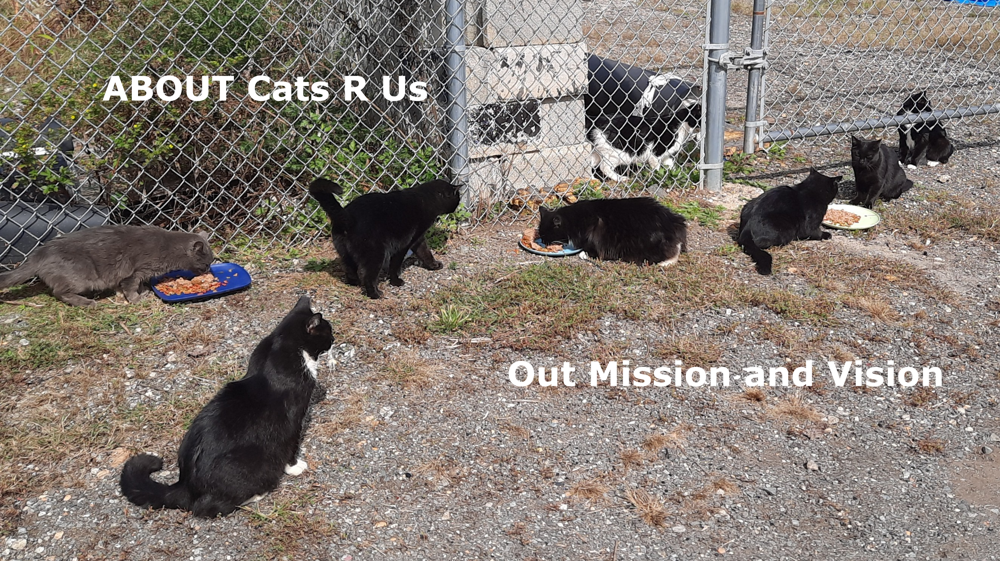

Cats R Us (CRU) is a 501(c)(3) non-profit cat rescue organization located in the Annapolis, Maryland area.
CRU’s primary missions are to:
Spay and neuter community (feral) cats through our Trap, Neuter, vaccinate, Return-Monitor (TNvR-M) program – the most humane and effective method for stabilizing community cat colonies;
Find “forever” homes through our foster care program for adoptable stray cats and kittens found while undertaking our TNvR-M projects – giving abandoned, homeless, or at-risk cats a safe place to land, medical care, and a path to adoption.; and
Educate the public on the importance of spaying and neutering all cats to address the cat overpopulation problem in our area. Please help us spread the word and assist others in locating lower cost spay/neuter resources in your local area! https://catsrusrescue.org/wp-content/uploads/2025/08/LowerCostSpayNeuterVetServices.pdf
When young kittens are caught during our trapping projects, our fosters socialize them so they can be put up for adoption once they are vetted and at a minimum 8 weeks of age. As a feline rescue group, it is all too common to find abandoned, domesticated cats at managed community cat colonies. Upon rescue, these tame cats enter our adoption program, are vetted, and once deemed healthy, begin the search for their forever homes.
CRU does not accept owner surrendered pets. Our partner, Anne Arundel SPCA, takes on this role in our cat rescue community. They are considered a no-kill shelter based on their 90%+ save rate.
In our 26 years of existence, CRU has facilitated the spay and neuter of thousands of cats, contributing greatly to the effort of controlling the problem of feline over-population in our area.